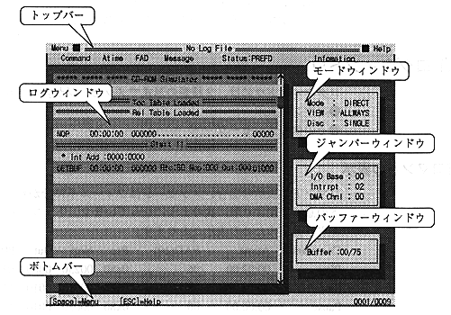

★PROGRAMMER'S GUIDE
★バーチャルCDシステム
★PROGRAMMER'S GUIDE
★バーチャルCDシステム
▲
戻る｜
進む▼
バーチャルCDシステムユーザーズマニュアル/第3章 ＣＤエミュレータ VCDEMU
3.2 エミュレータの表示
- バーチャルCDエミュレータの画面は次の６つの部分からなります。
図-4. バーチャルCDエミュレータの画面表示例

- ●トップバー
- トップバーには "Menu" と "Help" の２つのプルダウンメニューがあります("Help"は未実装)。中央にはバーチャルCDエミュレータ起動時に指定されたログ情報ファイル名が表示されます。ログ情報ファイルを指定しなかった場合は "No LogFile" と表示されます。その下には、ログウィンドウ内の情報の表示位置を示すバーがあります。このバーは普段は紫色ですが、LogViewモードになると黄色に変わります。
- ●ボトムバー
- 右隅に、ログ情報の総数に対する現在表示中のログ情報の行数が表示されます。
- ●ログウィンドウ
- 画面中央部にある青と水色で色分けされたウィンドウ。右側にスクロールバーがあり、ログ情報の総数に対する現在表示中のログ情報の位置を表わします。
- ●モードウィンドウ
- 画面右側の３つのうちの一番上にあるウィンドウ。次の３つのモードを表示します。
- バーチャルCDエミュレータのモード
Direct..........ダイレクトDOSファイルアクセス
Realtime.....リアルタイムエミュレーション
- 画面表示モード
Always.....全てのログ情報を表示するモード
Error..........エラー情報のみを表示するモード(未実装)
Logview.....ログ情報を見るモード
- CDのスピード
Single.........標準
Double........２倍速
- ●ジャンパーウィンドウ
- 画面右側３つのうちの中央にあるウィンドウ。ジャンパー設定位置を表示します。
- ●バッファーウィンドウ
- 画面右側３つのうちの一番下にあるウィンドウ。プログラム中で準備されたバッファに対する現在使用中のバッファの数が表示されます。
▲
戻る｜
進む▼
★PROGRAMMER'S GUIDE
★バーチャルCDシステム
Copyright SEGA ENTERPRISES, LTD,. 1997